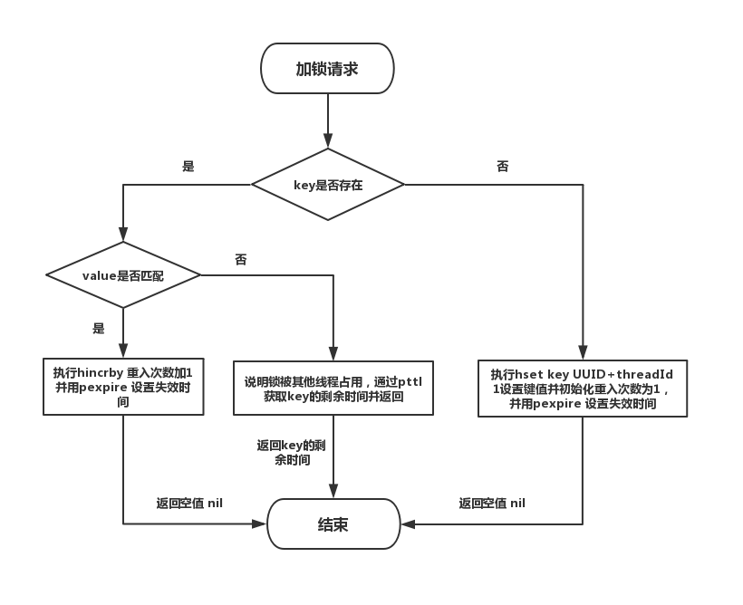
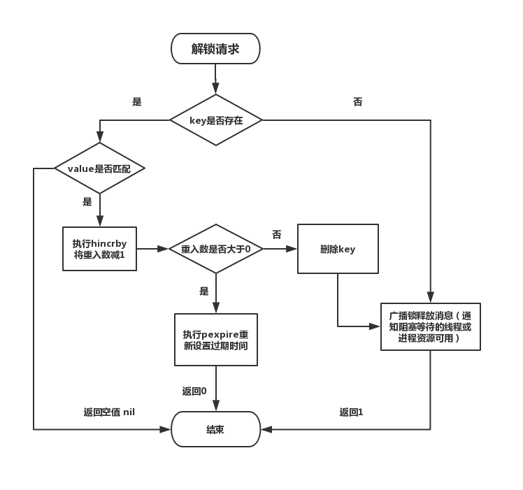

Redis实现分布式锁 包括：单机Redis的分布式锁、Redission可重入锁、Redission红锁
其中，Redission红锁可以解决分布式redis单点宕机故障转移存在的遗留问题
单机redis的分布式锁 关于代码的详细解释见代码注释。
单机redis详细参考：https://juejin.im/post/5b737b9b518825613d3894f4
1 2 3 4 5 6 7 8 9 10 11 12 13 14 15 16 17 18 19 20 21 22 23 24 25 26 27 28 29 30 31 32 33 34 35 36 37 38 39 40 41 42 43 44 45 46 47 48 49 50 51 public class RedisTool private static final String LOCK_SUCCESS = "OK" ; private static final String SET_IF_NOT_EXIST = "NX" ; private static final String SET_WITH_EXPIRE_TIME = "PX" ; private static final Long RELEASE_SUCCESS = 1L ; public static boolean getDistributedLock (Jedis jedis, String lockKey, String requestId, int expireTime) String result = jedis.set(lockKey, requestId, SET_IF_NOT_EXIST, SET_WITH_EXPIRE_TIME, expireTime); if (LOCK_SUCCESS.equals(result)) { return true ; } return false ; } public static boolean releaseDistributedLock (Jedis jedis, String lockKey, String requestId) String script = "if redis.call('get', KEYS[1]) == ARGV[1] then return redis.call('del', KEYS[1]) else return 0 end" ; Object result = jedis.eval(script, Collections.singletonList(lockKey), C ollections.singletonList(requestId)); if (RELEASE_SUCCESS.equals(result)) { return true ; } return false ; }
可重入锁 可重入锁参考：https://crazyfzw.github.io/2019/04/15/distributed-locks-with-redis/
Redisson 支持单点模式、主从模式、哨兵模式、集群模式，这里以单点模式为例：
1 2 3 4 5 6 7 8 9 10 11 12 13 14 15 16 17 18 19 20 21 22 23 Config config = new Config(); config.useSingleServer().setAddress("redis://127.0.0.1:5379" ).setPassword("123456" ).setDatabase(0 ); RedissonClient redissonClient = Redisson.create(config); RLock rLock = redissonClient.getLock(lockKey); try { boolean res = rLock.tryLock((long )waitTimeout, (long )leaseTime, TimeUnit.SECONDS); if (res) { } } catch (Exception e) { throw new RuntimeException("aquire lock fail" ); }finally { rLock.unlock(); }
获取锁的代码的核心流程：tryLock -> tryAcquire -> org.redisson.RedissonLock#tryLockInnerAsync

释放锁的过程：org.redisson.RedissonLock#unlockInnerAsync

需要特别注意的是，RedissonLock 同样没有解决单节点挂掉的时候，存在丢失锁的风险的问题。而现实情况是有一些场景无法容忍的，所以 Redisson 提供了实现了redlock算法的 RedissonRedLock。
Redission红锁 在我们的例子里面我们把N设成5，这是一个比较合理的设置，所以我们需要在5台机器上面或者5台虚拟机上面运行这些实例，这样保证他们不会同时都宕掉。为了取到锁，客户端应该执行以下操作:
获取当前Unix时间，以毫秒为单位。
依次尝试从5个实例，使用相同的key和具有唯一性的value（例如UUID）获取锁。当向Redis请求获取锁时，客户端应该设置一个尝试从某个Reids实例获取锁的最大等待时间（超过这个时间，则立马询问下一个实例），这个超时时间应该小于锁的失效时间。
客户端使用当前时间减去开始获取锁时间（步骤1记录的时间）就得到获取锁消耗的时间。当且仅当从大多数（N/2+1，这里是3个节点）的Redis节点都取到锁，并且使用的总耗时小于锁失效时间时，锁才算获取成功。
如果取到了锁，key的真正有效时间 = 有效时间（获取锁时设置的key的自动超时时间） - 获取锁的总耗时（询问各个Redis实例的总耗时之和）（步骤3计算的结果）。
如果因为某些原因，最终获取锁失败（即没有在至少 “N/2+1 ”个Redis实例取到锁或者“获取锁的总耗时”超过了“有效时间”），客户端应该在所有的Redis实例上进行解锁（即便某些Redis实例根本就没有加锁成功，这样可以防止某些节点获取到锁但是客户端没有得到响应而导致接下来的一段时间不能被重新获取锁）。
Redission使用RedLock
1 2 3 4 5 6 7 8 9 10 11 12 13 14 15 16 17 18 19 20 21 22 23 24 25 26 27 28 29 30 31 32 33 34 35 36 37 38 39 40 Config config1 = new Config(); config1.useSingleServer().setAddress("redis://172.0.0.1:5378" ).setPassword("a123456" ).setDatabase(0 ); RedissonClient redissonClient1 = Redisson.create(config1); Config config2 = new Config(); config2.useSingleServer().setAddress("redis://172.0.0.1:5379" ).setPassword("a123456" ).setDatabase(0 ); RedissonClient redissonClient2 = Redisson.create(config2); Config config3 = new Config(); config3.useSingleServer().setAddress("redis://172.0.0.1:5380" ).setPassword("a123456" ).setDatabase(0 ); RedissonClient redissonClient3 = Redisson.create(config3); RLock lock1 = redissonClient1.getLock(lockKey); RLock lock2 = redissonClient2.getLock(lockKey); RLock lock3 = redissonClient3.getLock(lockKey); RedissonRedLock redLock = new RedissonRedLock(lock1, lock2, lock3); try { boolean res = redLock.tryLock((long )waitTimeout, (long )leaseTime, TimeUnit.SECONDS); if (res) { } } catch (Exception e) { throw new RuntimeException("aquire lock fail" ); }finally { redLock.unlock(); }
加锁核心源码：
1 2 3 4 5 6 7 8 9 10 11 12 13 14 15 16 17 18 19 20 21 22 23 24 25 26 27 28 29 30 31 32 33 34 35 36 37 38 39 40 41 42 43 44 45 46 47 48 49 50 51 52 53 54 55 56 57 58 59 60 61 62 63 64 65 66 67 68 69 70 71 72 73 74 75 76 77 78 79 80 81 82 83 84 85 86 87 88 89 90 91 92 93 94 95 96 97 98 99 100 101 102 103 public boolean tryLock (long waitTime, long leaseTime, TimeUnit unit) throws InterruptedException long newLeaseTime = -1 ; if (leaseTime != -1 ) { newLeaseTime = unit.toMillis(waitTime)*2 ; } long time = System.currentTimeMillis(); long remainTime = -1 ; if (waitTime != -1 ) { remainTime = unit.toMillis(waitTime); } long lockWaitTime = calcLockWaitTime(remainTime); int failedLocksLimit = failedLocksLimit(); List<RLock> acquiredLocks = new ArrayList<>(locks.size()); for (ListIterator<RLock> iterator = locks.listIterator(); iterator.hasNext();) { RLock lock = iterator.next(); boolean lockAcquired; try { if (waitTime == -1 && leaseTime == -1 ) { lockAcquired = lock.tryLock(); } else { long awaitTime = Math.min(lockWaitTime, remainTime); lockAcquired = lock.tryLock(awaitTime, newLeaseTime, TimeUnit.MILLISECONDS); } } catch (RedisResponseTimeoutException e) { unlockInner(Arrays.asList(lock)); lockAcquired = false ; } catch (Exception e) { lockAcquired = false ; } if (lockAcquired) { acquiredLocks.add(lock); } else { if (locks.size() - acquiredLocks.size() == failedLocksLimit()) { break ; } if (failedLocksLimit == 0 ) { unlockInner(acquiredLocks); if (waitTime == -1 && leaseTime == -1 ) { return false ; } failedLocksLimit = failedLocksLimit(); acquiredLocks.clear(); while (iterator.hasPrevious()) { iterator.previous(); } } else { failedLocksLimit--; } } if (remainTime != -1 ) { remainTime -= System.currentTimeMillis() - time; time = System.currentTimeMillis(); if (remainTime <= 0 ) { unlockInner(acquiredLocks); return false ; } } } if (leaseTime != -1 ) { List<RFuture<Boolean>> futures = new ArrayList<>(acquiredLocks.size()); for (RLock rLock : acquiredLocks) { RFuture<Boolean> future = ((RedissonLock) rLock).expireAsync(unit.toMillis(leaseTime), TimeUnit.MILLISECONDS); futures.add(future); } for (RFuture<Boolean> rFuture : futures) { rFuture.syncUninterruptibly(); } } return true ; }